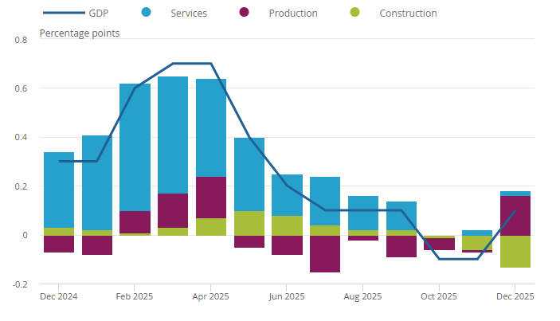

Portfolio
10 Coding Challenges demonstrating skills in data visualisation, web scraping, API integration, interactive dashboards, and machine learning applications.
CC1: Hosting
Display charts in your own site using vegaEmbed
UK GDP Growth (1985–2024)
Unemployment: Canada, UK & USA
CC2: Building
Create your own visualisations using the Economics Observatory Data Hub
UK Inflation (CPI)
Egypt Inflation (CPI)
CC3: Debate
Use a visualisation in policy commentary
Higher public education spending is associated with stronger long-run economic growth in Latin American and European/Other economies.
Education Spending vs GDP Growth (2006–2024)
No clear positive link found: Chile and Germany invest similarly yet grow differently — institutions may matter more than spending alone.
GDP Growth & Education Spending by Country (2006–2024)
Peru consistently spends less than peers despite strong growth — suggesting spending level alone does not determine economic performance.
CC4: Replication
Re-create, then improve, someone else's chart
Original Chart (The Economist)

Replicated Chart (Vega-Lite)
Improved Version
Improvements: Interactive sector toggle, zero reference line, peak/contraction annotations, accessible colours, area fill — reducing chartjunk.
CC5: Accessing Data — API & Scraper
Live FRED API chart + Python scraper from Trading Economics
Part A — Live API: FRED
Peru PEN/USD Exchange Rate (2000–2024)
🔌 API Documentation
| Base URL | https://api.stlouisfed.org/fred/series/observations |
| series_id | FXRATEPEA618NUPN — PEN per USD (Penn World Table, annual) |
| api_key | &api_key={YOUR_KEY} — free key from fred.stlouisfed.org |
| file_type | &file_type=json — returns JSON array of observations |
| date range | &observation_start=2000-01-01&observation_end=2024-12-31 |
| Full URL |
fred.stlouisfed.org/series/FXRATEPEA618NUPN
|
FRED API provides annual PEN/USD rates for Peru; the sol depreciated steadily, with notable acceleration during COVID-19 in 2020.
Part B — Web Scraper: Trading Economics
Peru: Key Macroeconomic Indicators (Latest vs Previous)
📓 Google Colab notebook: CC5 — FRED API + Trading Economics Scraper
Scraped Trading Economics macroeconomic table for Peru using Python requests and pandas; data pivoted to tidy format for Vega-Lite visualisation.
CC6: Loops — Dashboard
Batch download via loop, grid of 6 charts
🔄 In progress...
CC7: Maps
Base map (Scotland) and choropleth (Wales)
🔄 In progress...
CC8: Big Data
Extracting a story from millions of UK prices
🔄 In progress...
CC9: Interactive Charts
Slider, dropdown, or clickable legend interactivity
🔄 In progress...
CC10: Advanced Analysis & Machine Learning
Advanced analytics chart + sklearn ML pipeline
🔄 In progress...